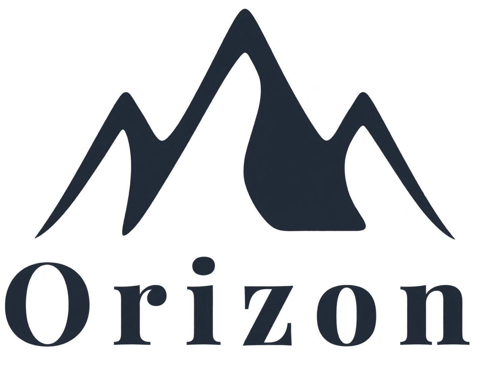

Scanzonato e goliardico
Una comunicazione molto informale, ironica e giocosa, capace di creare vicinanza ma meno adatta a costruire un posizionamento adulto e consapevole.

Una voce per viaggiare in modo più umano, senza cliché e senza prediche.
Ho definito il Tone of Voice di Orizon, agenzia di viaggi ipotetica, e sviluppato i contenuti per Instagram, YouTube e LinkedIn. Il progetto parte dall'analisi di quattro competitor per costruire una voce riconoscibile e adulta, capace di parlare di viaggio e sostenibilità senza trasformare ogni messaggio in una lezione.
Scarica il progetto completoTHE PROJECT
Orizon nasce come esercizio di progettazione della comunicazione per un'agenzia di viaggi sostenibili.
Il progetto parte dalla definizione di un'identità verbale coerente con il posizionamento del brand e capace di distinguersi all'interno di un settore in cui la comunicazione tende spesso a seguire formule già consolidate.
Ho lavorato sul Tone of Voice e sulla sua applicazione concreta attraverso contenuti pensati per piattaforme e pubblici differenti.
THE CHALLENGE
L'analisi di quattro competitor ha mostrato un pattern piuttosto netto.
Da una parte una comunicazione molto scanzonata e goliardica; dall'altra un linguaggio istituzionale, informativo e impersonale.
Orizon aveva bisogno di uno spazio diverso: una voce calda e diretta, ma adulta; capace di parlare di viaggio senza infantilizzarlo e di sostenibilità senza trasformarla in una predica.
Una comunicazione molto informale, ironica e giocosa, capace di creare vicinanza ma meno adatta a costruire un posizionamento adulto e consapevole.
Un linguaggio più autorevole e informativo, ma spesso distante dalle persone e poco capace di costruire un rapporto diretto con chi viaggia.
THE TONE OF VOICE
La direzione scelta è una voce calda e diretta, ma adulta.
Orizon parla alle persone come viaggiatori, evitando sia il tono eccessivamente promozionale sia quello moralista. La sostenibilità entra nel racconto come parte naturale del modo di viaggiare, non come una dichiarazione da ripetere in ogni contenuto.
Ho inoltre scelto di dare voce ai fondatori in prima persona, evitando un tono aziendale anonimo e costruendo una comunicazione più vicina a una conversazione reale.
Una voce vicina e umana, senza infantilizzare il viaggio né ricorrere a formule eccessivamente emotive.
Il brand propone un punto di vista anche dato da anni di esperienza nel settore.
Il linguaggio resta credibile e competente ma mai impersonale.
La sostenibilità viene raccontata attraverso scelte, esempi e contenuti utili, evitando moralismi e prediche.
CONTENT DESIGN
La voce di Orizon prende forma attraverso contenuti diversi, progettati per piattaforme e obiettivi specifici.
Ho sviluppato testi per Instagram, YouTube e LinkedIn, mantenendo la stessa personalità ma adattando tono, struttura e livello di approfondimento al contesto.
Ho progettato un carosello informativo sull'overtourism, pensato per essere condiviso e salvato prima ancora che per promuovere il brand.
Un linguaggio più narrativo e disteso, capace di sviluppare temi legati al viaggio mantenendo la voce personale dei fondatori.
Una scrittura più strutturata e professionale, ma coerente con il tono umano e diretto definito per il brand.
Un contenuto informativo costruito per essere utile, condivisibile e leggibile anche fuori dal contesto del brand.
CONTENT FEATURE
Il carosello sull'overtourism è stato pensato come un esempio concreto della strategia editoriale: partire da un tema rilevante per chi viaggia, renderlo accessibile e costruire un contenuto che abbia valore anche senza una call to action commerciale immediata.
Il brand diventa così una voce che offre strumenti e punti di vista, invece di limitarsi a promuovere destinazioni.
THE RESULT
Non dire alle persone come devono viaggiare. Dai loro un motivo per guardare il viaggio diversamente.
Il progetto definisce un sistema verbale capace di rendere Orizon riconoscibile attraverso le parole: caldo ma non ingenuo, consapevole ma non moralista, personale ma non informale a tutti i costi.
Approfondisci il progetto